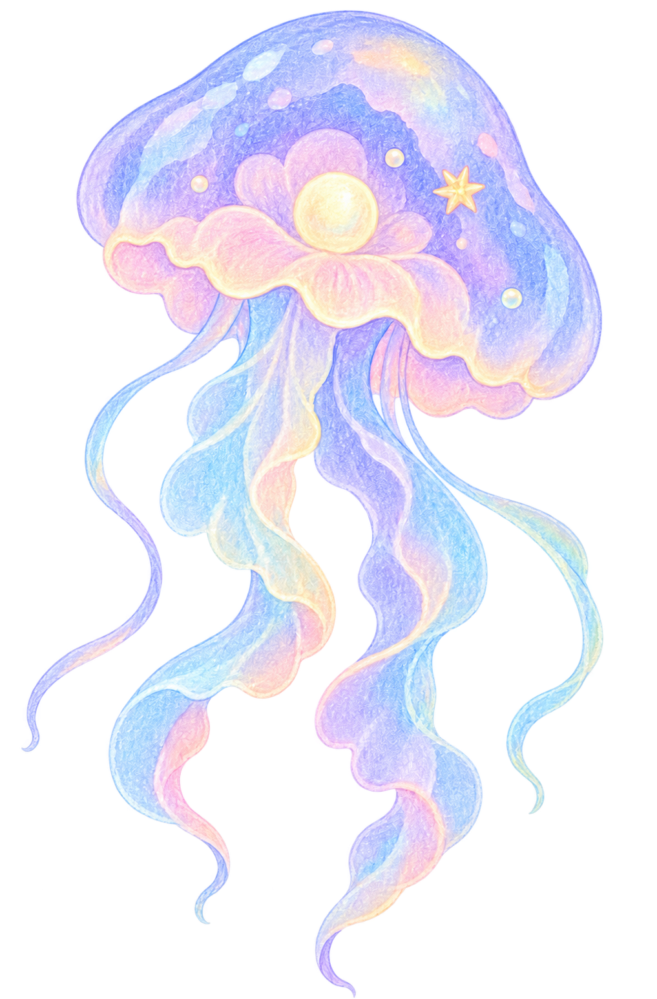

PROFESSIONAL INTROplaceholder
SELECTED WORKLTPO
SELECTED WORK100-inch
SELECTED WORKMedia Lab
SELECTED WORKBeijing 2022
WRITING ARCHIVE01 / field notes
WRITING ARCHIVE02 / small tides
WRITING ARCHIVE03 / moving light
WRITING ARCHIVE04 / after the rain
SIDE EXPANSIONPERSONAL EDITS
SIDE EXPANSIONTRAVEL PLANS
FAR BELOWA LITTLE DEEPER
FAR BELOWBEHIND THE SEA
DEEPEST POINTA LITTLE DEEPER
DEEPEST POINTBEHIND THE SEA

返回海面DEPTH000m